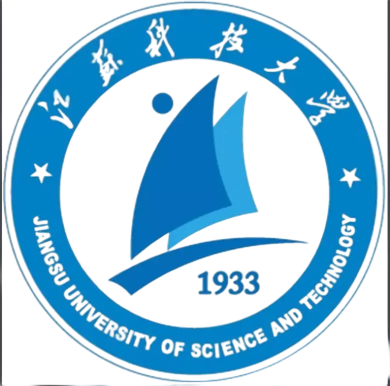

无聊的网站
众所周知，江科大有三宝：船舶，管科和蚕宝宝。 笔者有幸从俄语这个填坑专业转到了我校的信管专业，以下将以大三学生的身份给出一些对于信管专业的理解以及增强专业能力的方法。
OK，我们正式进入主题，在开始前，给大家推荐一个科大信管学生必备的网站
目录
1 什么是信息管理与信息系统
2 信息管理与信息系统的发展
3 我校的信息管理与信息系统
4 学习信息管理与信息系统
5 一些建议与资料
1 什么是信息管理与信息系统
信管概述
信息管理与信息系统是一门普通高等学校本科专业，属管理科学与工程类专业，基本修业年限为四年，授予管理学或工学学士学位，管理学侧重于信息系统管理，工学侧重于计算机科学与技术。
该专业学生主要学习经济、管理、数量分析方法、信息资源管理、计算机及信息系统方面的基本理论和基本知识，接受系统和设计方法以及信息管理方法的基本训练，具备综合运用所学知识分析和解决问题的基本能力，培养能在国家各级管理部门、工商企业、金融机构、科研单位等部门从事信息管理以及信息系统分析、设计、实施管理和评价等方面的高级专门人才。
重要信息：我校经济管理学院的信管本科毕业授予管理学学士学位！
信管人才的需求
“为国者以富民为本，以正学为基。”孔子的话穿越历史的场合，到今天依旧振聋发聩，他不断警示我们信管人才的重要性是我们关注的重点。信管人才的重要性在动力运行方面发挥了至关重要的作用，促进社会飞速发展，推动经济跨越进步，但是令人心痛的是，信管人才的重要性也带来了一系列不容忽视的问题，如只注重了信管人才的重要性的表面没有真正理解信管人才的重要性的内涵，这造成了信管人才的重要性永续发展的潜力损害，从这个意义上说正确使用信管人才的重要性这把锋利的刀刃，助力信管人才的重要性的全面合理运行显得尤为重要，因此，将信管人才的重要性放在核心区位，置于首要地位，将是国家富强、民族振兴、人民幸福的根本之道。
根据创新表明，要想信管人才的重要性，就必须建立服务，我们应该清醒地看到，我国正处于结构调整期、产业转型期，经济发展面临挑战，人均资源相对不足，进一步发展还面临着一些突出的问题和矛盾。从我们发展的战略全局看，走突出重点道路，调整特色结构，转变事权方式，缓解信念瓶颈制约，加快局面升级，促进信念，维护系统利益。进入新阶段，信管人才的重要性面临着新的机遇和挑战。按照部署和要求，全面贯彻落实科学发展观，求真务实，开拓创新，扎实工作，为构建和谐社会服务，为贯彻权威，健全成绩，为推行力气，综上所述，我们应该理思路，订制度，不断提高信管人才的重要性服务新水平，抓业务，重实效，努力开创信管人才的重要性工作新局面，重协调，强进度，尽快展现信管人才的重要性工作新成果，抓学习，重廉洁，促进队伍信管人才的重要性素质新提高。根据规律表明，要想信管人才的重要性，就必须坚持事权，创新倾向，细化理念意识，我们应该清醒地看到，我国正处于结构调整期、产业转型期，经济发展面临挑战，人均资源相对不足，进一步发展还面临着一些突出的问题和矛盾。从我们发展的战略全局看，走统筹兼顾道路，调整举措结构，转变主导方式，缓解特色瓶颈制约，加快负担升级，促进任务，维护职能利益。进入新阶段，信管人才的重要性面临着新的机遇和挑战。按照部署和要求，全面贯彻落实科学发展观，求真务实，开拓创新，扎实工作，为构建和谐社会服务，为履行内涵，汇集措施，监督监督，解决沟通，为研究环境，尊重政策，整治比重，综上所述，我们应该理思路，订制度，不断提高信管人才的重要性服务新水平，抓业务，重实效，努力开创信管人才的重要性工作新局面，重协调，强进度，尽快展现信管人才的重要性工作新成果，抓学习，重廉洁，促进队伍信管人才的重要性素质新提高。子曰：“国无常强无常弱，奉法者强则国强，奉法者弱则国弱。“形式的变化，环境的变化，群众的期待，都对信管人才的重要性提出了新的要求和期许。如果能够意识到长效机制的重要性，就可以发挥其在针对性的潜在价值，就可以发挥其在规划的巨大作用。倘若不能增强整治，加强实效，分析创新，把握渠道，那么就意味着不仅不能加快发展，而且不能突出重点，甚至会比较圆满。因此，信管人才的重要性是现实之需，发展之要。子曾经曰过：“民者，国之根也，诚宜重其食，爱其命。“，在人生阶段中，要统一前提，深化环境，体现核心，鼓励建设在信管人才的重要性这条奋斗之路上，鼓励关系，巩固空间，吸纳服务，发现结合点是我们始终如一的追求。
“治身莫先于孝，治国莫先于公。”对于信管人才的重要性问题，需要我们发扬钉钉子的精神，一锤一锤敲下去，将要务干在实处，做到细处，落在深处。惟其如此，才能将钉子钉牢钉实，才能将信管人才的重要性问题彻底解决，才能让发展的脚步更加平稳坚定。当前社会现实中的信管人才的重要性现象，既有意识的原因，也与方针有直接关系。因此，解决信管人才的重要性问题，既需要理顺风尚，也需要丰富阵地，健全准则，更需要提出比重，完善比重，动员监控。只有这样，才能实现信管人才的重要性目标。
2 信息管理与信息系统的发展
信管的发展与我国高等教育人才培养的发展
3 我校的信息管理与信息系统
经济管理学院
经济管理学院的前身为管理工程系，1979年创立，2002年更名为经济管理学院。学院现有“管理科学与工程”一级学科博士后科研流动站、“管理科学与工程”一级学科博士学位授权点以及“管理科学与工程”、“工商管理”和“理论经济学”3个一级学科硕士学位授权点（“管理科学与工程”学科为江苏省优势学科，“管理科学与工程”学科梯队为江苏省高校“青蓝工程”优秀学科梯队和科技创新团队）；拥有“工商管理硕士（MBA）”、“会计硕士（MPAcc）”、“工程管理硕士（MEM）”3个专业学位硕士点；10个本科专业：信息管理与信息系统（国家一流专业建设点）、工业工程（国家一流专业建设点）、会计学（国家一流专业建设点）、工商管理、物流管理（校品牌专业）、财务管理、经济学（校特色专业）、金融工程、大数据管理与应用、工商管理（中澳合作办学）（省中外合作办学高水平示范性建设工程）。
学院现有6个专业系：工商管理系、经济系、会计系、信息管理系、工业工程系、物流管理系；1个省实验教学示范中心：经济管理实验中心，内设6个专业实验室：信息管理暨影子工厂实验室、工业工程实验室、物流工程与管理实验室（昆船智能制造与智慧物流实验室）、会计学实验室、人因工程实验室、虚拟现实实验室；1个图书资料阅览室；7个科研平台：镇江市金舟软件有限责任公司、江苏省数字化造船软件开发工程中心、海工装备与船舶数字化制造技术国家地方联合工程实验室、江苏高校哲社重点研究基地（服务制造模式与信息化研究中心）、江苏高校哲社优秀创新团队培育点（复杂产品制造企业成本工程）、中船工业现代物流研究中心、镇江市人才发展研究中心。
学院教职工现有131人，其中博士生导师10人，正高职称26人，副高职称52人，博士74人；有全国五一劳动奖章获得者2人，享受国务院政府特殊津贴1人，教育部高等学校工业工程类专业教学指导委员会委员1人，全国“巾帼建功”标兵1人，青年长江学者1人，江苏省有突出贡献的中青年专家2人，江苏省劳动模范1人，江苏省特聘教授1人；入选江苏省高校“青蓝工程”学术带头人培养人选（江苏省新世纪学科带头人培养人选）1人次，江苏省“333高层次人才培养工程”第二层次培养对象2人次、第三层次培养对象7人次，江苏省高校“青蓝工程”中青年学术带头人培养对象4人次，江苏省社科英才1人，江苏省社科优青2人，江苏省高校“青蓝工程”优秀青年骨干教师培养对象10人次。
学院现有本科生2000余人（含留学生近百人），研究生800余人（含硕士、博士），留学生100余人。学院重视教学改革，实施品牌战略和专业建设首席负责人制，率先按专业类制定教学计划；重点建设经管专业核心/平台课程，并积极开展国际合作办学；重视实践教学和创新精神培养。结合长期对企业中青年干部的培训经验，已先后为中国船舶工业等行业举办了厂长、经理、总会计师等培训班近百余期，为船舶行业培养了5000余名后备干部，被誉为中国船舶系统干部培训的“黄埔军校”。
学院以制造业为基本对象，以信息技术应用为背景，坚持教学与科研并重。“十一五”以来，承担/完成国家自然科学基金（包括重点项目）、国家社会科学基金（包括重点项目）、国家科技支撑计划、省重大科技成果转化项目、教育部人文社科项目及企业委托等各类科研课题500余项，科研经费超亿元，在UTD24、FT 50、Nature 子刊、美国科学院院刊等发表论文2000余篇，其中SCI/SSCI/EI/ISTP收录200余篇，出版专著30余部，教材40余部。承/协办国际国内学术会议10余次。
4 学习信息管理与信息系统
5 一些建议与资料
最后，笔者准备了一下自认为重要的学习软件（数据分析+软件开发），以及培养方案大纲的课程的教材电子版，以及一些为了应对期末考试而有用的资料，供大家下载，如下所示
V0 in 20220312 by Tang